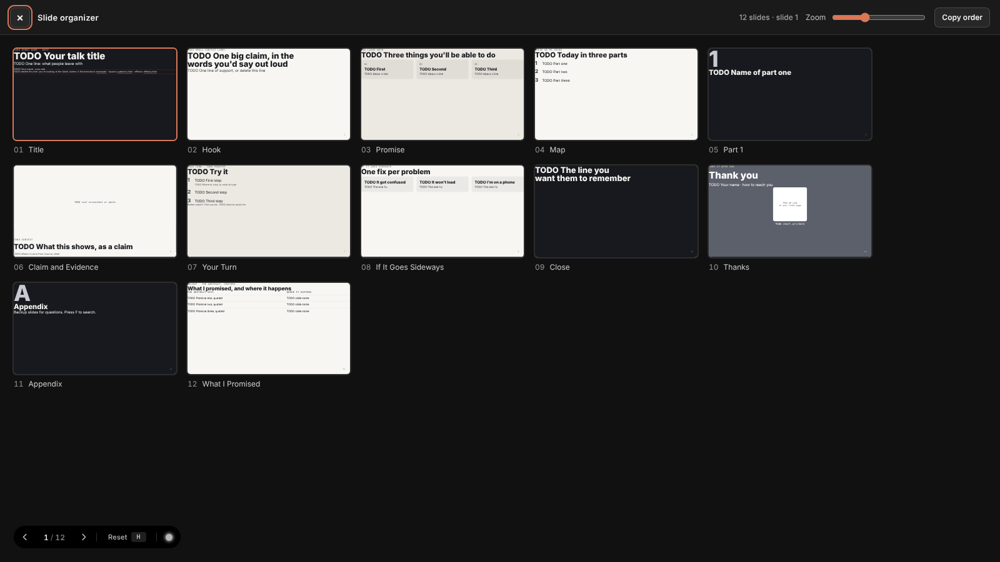

The effects menu
Find an effect you like, copy the line under it, paste it to your agent
Today's specials
Effect · stagger
Always punctual
Right on cue
Fashionably late
Missed it? Press R
Use the stagger effect from effects.html on the cards on my Promise slide.Effect · steps
Make the list on my Your Turn slide appear one item per click (steps effect from effects.html).Effect · typewriter
R types it again
Make my Hook title type itself out (typewriter effect from effects.html).Effect · scramble
Good for a reveal, a password, a plot twist
Make the big line on my Twist slide decode itself (scramble effect from effects.html).Effect · count
1,000,000
slides you've sat through this year (a made-up number, counted up for drama)
Make the number on my Results slide count up (count effect from effects.html). Use our real number.Effect · pop
Ta-da
Hold back the punchline on my Close slide and pop it in after a beat (pop effect from effects.html).Effect · mark
The highlighter waits until you're looking
Highlight the key phrase on my Claim slide with the mark effect from effects.html.
Effect · zoom
Works on any photo or screenshot
Give the photo on my Story slide a slow zoom (zoom effect from effects.html).Effect · reveal
You guessed it: this whole menu is one HTML file and one script.
Blur the answer on my Quiz slide until I click it (reveal effect from effects.html).Effect · flip
HTML slides need a developer
They need an agent and a few answers
It won't work without wifi
Everything loads from the folder
Animation is hard
This one is a single attribute
Turn the three cards on my Myths slide into flip cards with an answer on the back (flip effect from effects.html).Effect · timer
Turn to a neighbor. This only ticks while the slide is up
Put a 3-minute countdown on my Your Turn slide (timer effect from effects.html).Effect · clock
A picture of a slide couldn't know that
Show the local time on my Welcome slide (clock effect from effects.html).Magic keys · press them any time
They float on top of the slide and never change it. B is handy when you want eyes on you
Turn on the magic keys (engine/magic-keys.js) in my deck.Not on the menu?
Snow on the winter slide. A map that lights up. A poll the room answers by clapping
On my Map slide, light up each part as I click through it. Build it like the effects in engine/effects.js.House rules
Where it makes a point, not everywhere
Arrive backwards and it's already finished
Reduced motion and print show the end state
Which one or two effects from effects.html fit my talk? Propose them as suggestions on the slides.